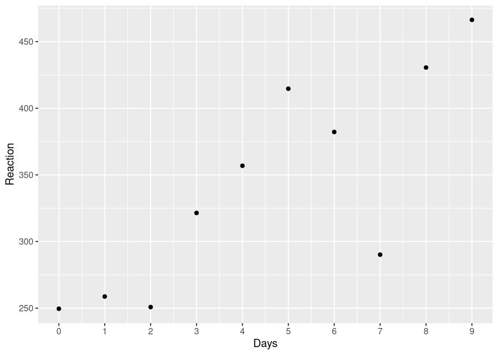

library("lme4")
library("tidyverse")
just_308 <- sleepstudy |>
filter(Subject == "308")
ggplot(just_308, aes(x = Days, y = Reaction)) +
geom_point() +
scale_x_continuous(breaks = 0:9)

Some ideas in this chapter come from the textbook Statistical Rethinking by McElreath (2020), This chapter also borrows extensively from Tristan Mahr’s excellent blog post on partial pooling.
sleepstudy datasetIn this chapter, we’ll be working with some real data from a study looking at the effects of sleep deprivation on psychomotor performance (Belenky et al., 2003). Data from this study is included as the built-in dataset sleepstudy in the lme4 package for R (Bates et al., 2015).
Let’s start by looking at the documentation for the sleepstudy dataset. After loading the lme4 package, you can access the documentation by typing ?sleepstudy in the console.
sleepstudy package:lme4 R Documentation
Reaction times in a sleep deprivation study
Description:
The average reaction time per day (in milliseconds) for subjects
in a sleep deprivation study.
Days 0-1 were adaptation and training (T1/T2), day 2 was baseline
(B); sleep deprivation started after day 2.
Format:
A data frame with 180 observations on the following 3 variables.
‘Reaction’ Average reaction time (ms)
‘Days’ Number of days of sleep deprivation
‘Subject’ Subject number on which the observation was made.
Details:
These data are from the study described in Belenky et al. (2003),
for the most sleep-deprived group (3 hours time-in-bed) and for
the first 10 days of the study, up to the recovery period. The
original study analyzed speed (1/(reaction time)) and treated day
as a categorical rather than a continuous predictor.
References:
Gregory Belenky, Nancy J. Wesensten, David R. Thorne, Maria L.
Thomas, Helen C. Sing, Daniel P. Redmond, Michael B. Russo and
Thomas J. Balkin (2003) Patterns of performance degradation and
restoration during sleep restriction and subsequent recovery: a
sleep dose-response study. _Journal of Sleep Research_ *12*, 1-12.These data meet our definition of multilevel data due to repeated measurements on the same dependent variable (mean RT) for the same participants over ten days. Multilevel data of this type is extremely common in psychology. Unfortunately, most statistics textbooks commonly used in psychology courses don’t sufficiently discuss multilevel data, beyond paired t-tests and repeated-measures ANOVA. The sleepstudy dataset is interesting because it is multilevel but has a continuous predictor, and thus does not fit will with t-test or ANOVA, because both of these approaches are for categorical predictors. There are ways you could make the data fit into one of these frameworks, but not without losing information or possibly violating assumptions.
It is a shame that psychology students don’t really learn much about analyzing multilevel data. Think about studies you have read recently in psychology or neuroscience. How many of them take a single measurement on the DV from each participant? Very few, if any. Nearly all take multiple measurements, for one or more of the following reasons: (1) the researchers are measuring the same participants across levels of a factor in a within-subject design; (2) they are interested in assessing change over time; or (3) they are measuring responses to multiple stimuli. Multilevel data is so common that multilevel analysis should be taught as the default approach in psychology. Learning about multilevel analysis can be challenging, but you already know much of what you need by having learned about correlation and regression. You will see that it is just an extension of simple regression.
Let’s take a closer look at the sleepstudy data. The dataset contains eighteen participants from the three-hour sleep condition. Each day, over 10 days, participants performed a ten-minute “psychomotor vigilance test” where they had to monitor a display and press a button as quickly as possible each time a stimulus appeared. The dependent measure in the dataset is the participant’s average response time (RT) on the task for that day.
A good way to start every analysis is to plot the data. Figure 5.1 shows data for a single subject.
library("lme4")
library("tidyverse")
just_308 <- sleepstudy |>
filter(Subject == "308")
ggplot(just_308, aes(x = Days, y = Reaction)) +
geom_point() +
scale_x_continuous(breaks = 0:9)Use ggplot to recreate Figure 5.2 below, which shows data for all 18 subjects.
It looks like RT is increasing with each additional day of sleep deprivation, starting from day 2 and increasing until day 10.
Just above, you were given the code to make a plot for a single participant. Adapt this code to show all of the participants by getting rid of the filter() statement and adding a ggplot2 function that starts with facet_.
Same as above, except you just add one line: facet_wrap(~Subject)
ggplot(sleepstudy, aes(x = Days, y = Reaction)) +
geom_point() +
scale_x_continuous(breaks = 0:9) +
facet_wrap(~Subject)We wish to understand the effect of sleep deprivation on respnose time, so we will try to model this relationship. To model the data appropriately, first we need to know more about the study design. This is how Belenky et al. (2003) describe it (p. 2):
The first 3 days (T1, T2 and B) were adaptation and training (T1 and T2) and baseline (B) and subjects were required to be in bed from 23:00 to 07:00 h [8 h required time in bed (TIB)]. On the third day (B), baseline measures were taken. Beginning on the fourth day and continuing for a total of 7 days (E1–E7) subjects were in one of four sleep conditions [9 h required TIB (22:00–07:00 h), 7 h required TIB (24:00–07:00 h), 5 h required TIB (02:00–07:00 h), or 3 h required TIB (04:00–07:00 h)], effectively one sleep augmentation condition, and three sleep restriction conditions.
There were seven nights of sleep restriction, with the first night of restriction occurring after the third day. The first two days, coded as 0, 1, were adaptation and training. The day coded as 2, where the baseline measurement was taken, should be the place where we start our analysis. If we include the days 0 and 1 in our analysis, this might bias our results, since any changes in performance during the first two days have to do with training, not sleep restriction. Exercise 4.2 shows how to do this. The resulting data is stored in the data frame sleep2, which we will use in the analysis.
Remove from the dataset observations where Days is coded 0 or 1, and then make a new variable days_deprived from the Days variable so that the sequence starts at day 2, with day 2 being re-coded as day 0, day 3 as day 1, day 4 as day 2, etc. This new variable now tracks the number of days of sleep deprivation. Store the new table as sleep2.
You will need to get rid of observations where Days is less than 2, and then create a new variable, days_deprived, which is a transformation of the variable Days.
You can do this by using two of the following six one-table dplyr verbs on the data: select(), mutate(), group_by(), filter(), arrange(), summarise().
sleep2 <- sleepstudy |>
filter(Days >= 2L) |>
mutate(days_deprived = Days - 2L)It is always a good idea to double check that the code works as intended. First, look at it:
head(sleep2) Reaction Days Subject days_deprived
1 250.8006 2 308 0
2 321.4398 3 308 1
3 356.8519 4 308 2
4 414.6901 5 308 3
5 382.2038 6 308 4
6 290.1486 7 308 5And check that Days and days_deprived match up.
sleep2 |>
count(days_deprived, Days) days_deprived Days n
1 0 2 18
2 1 3 18
3 2 4 18
4 3 5 18
5 4 6 18
6 5 7 18
7 6 8 18
8 7 9 18Looks good. Note that the variable n in generated by count() and tells you how many rows there are for each unique combination of Days and days_deprived. In this case, there were 18, one row for each participant.
Now let’s re-plot the data looking at just these eight data points from Day 0 to Day 7. We’ve just copied the code from above, substituting sleep2 for sleepstudy and using days_deprived for our x variable.
ggplot(sleep2, aes(x = days_deprived, y = Reaction)) +
geom_point() +
scale_x_continuous(breaks = 0:7) +
facet_wrap(~Subject) +
labs(y = "Reaction Time", x = "Days deprived of sleep (0 = baseline)")Take a moment to think about how me might model the relationship between days_deprived and Reaction. Does reaction time increase or decrease with increasing sleep deprivation? Is the relationship roughly stable or does it change with time?
With only one exception (subject 335) it looks like reaction time increases with each additional day of sleep deprivation. It looks like we could fit a line to each participant’s data. Recall the general equation for a line is of the form y = y-intercept + slope \(\times\) x. In regression, the we usually express a linear relationship with the formula
\[Y_i = \beta_0 + \beta_1 X_i + e_i\]
where \(\beta_0\) is the y-intercept and \(\beta_1\) is the slope. We estimate these two :regression coefficients from the data.
The lines will all differ in intercept (mean RT at day zero, before the sleep deprivation began) and slope (the change in RT with each additional day of sleep deprivation). But should we fit the same line to everyone? Or a totally different line for each subject? Or something somewhere in between?
Let’s start by considering three different approaches we might take. Following McElreath, we will distinguish these approaches by calling them complete pooling, no pooling, and partial pooling.
The complete pooling approach is a “one-size-fits-all” model: it estimates a single intercept and slope for the entire dataset, ignoring the fact that different subjects might vary in their intercepts or slopes. If that sounds like a bad approach, it is; but you know this because you’ve already visualized the data and noted that the pattern for each participant would seem to require different y-intercept and slope values.
Fitting one line is called the “complete pooling” approach because we pool together data from all subjects to get single estimates for an overall intercept and slope. The GLM for this approach is simply
\[Y_{sd} = \beta_0 + \beta_1 X_{sd} + e_{sd}\]
\[e_{sd} \sim N\left(0, \sigma^2\right)\]
where \(Y_{sd}\) is the mean RT for subject \(s\) on day \(d\), \(X_{sd}\) is the value of days_deprived associated with that case (0-7), and \(e_{sd}\) is the error.
We would fit such a model in R using the lm() function, e.g.:
cp_model <- lm(Reaction ~ days_deprived, sleep2)
summary(cp_model)
Call:
lm(formula = Reaction ~ days_deprived, data = sleep2)
Residuals:
Min 1Q Median 3Q Max
-112.284 -26.732 2.143 27.734 140.453
Coefficients:
Estimate Std. Error t value Pr(>|t|)
(Intercept) 267.967 7.737 34.633 < 2e-16 ***
days_deprived 11.435 1.850 6.183 6.32e-09 ***
---
Signif. codes: 0 '***' 0.001 '**' 0.01 '*' 0.05 '.' 0.1 ' ' 1
Residual standard error: 50.85 on 142 degrees of freedom
Multiple R-squared: 0.2121, Adjusted R-squared: 0.2066
F-statistic: 38.23 on 1 and 142 DF, p-value: 6.316e-09According to this model, the predicted mean response time on Day 0 is about 268 milliseconds, with an increase of about 11 milliseconds per day of deprivation, on average. We can’t trust the standard errors for our regression coefficients, however, because we are assuming that all of the observations are independent (technically, that the residuals are). However, we can be pretty sure this is a bad assumption.
Let’s add the model predictions to the graph that we created above. We can use geom_abline() to do so, specifying the intercept and slope for the line using the regression coefficients from the model fit, coef(cp_model), which returns a two-element vector with intercept and slope, respectively.
coef(cp_model) (Intercept) days_deprived
267.96742 11.43543 ggplot(sleep2, aes(x = days_deprived, y = Reaction)) +
geom_abline(intercept = coef(cp_model)[1],
slope = coef(cp_model)[2],
color = 'blue') +
geom_point() +
scale_x_continuous(breaks = 0:7) +
facet_wrap(~Subject) +
labs(y = "Reaction Time", x = "Days deprived of sleep (0 = baseline)")The model fits the data badly. We need a different approach.
Pooling all the information to get just one intercept and one slope estimate is inappropriate. Another approach would be to fit separate lines for each participant. This means that the estimates for each participant will be completely uninformed by the estimates for the other participants. In other words, we separately estimate 18 individual intercept/slope pairs.
This model could be implemented in two ways: (1) by running separate regressions for each participant or (2) by running fixed-effects regression. We’ll do the latter, so that everything is in one big model. We know how to do this already: we add in dummy codes for the Subject factor. We have 18 levels of this factor, so we’d need 17 dummy codes. Fortunately, R saves us from the trouble of creating the 17 variables we would need by hand. All we need to do is include Subject as a predictor in the model, and interact this categorical predictor with days_deprived to allow intercepts and slopes to vary.
The variable Subject in the sleep2 dataset is nominal. We just use numbers as labels to preserve anonymity, without intending to imply that Subject 310 is one point better than Subject 309 and two points better than 308. Make sure that you define it as a factor so that it is not included as a continuous variable!
We can test whether something is a factor in various ways. One is to use summary() on the table.
sleep2 |> summary() Reaction Days Subject days_deprived
Min. :203.0 Min. :2.00 308 : 8 Min. :0.00
1st Qu.:265.2 1st Qu.:3.75 309 : 8 1st Qu.:1.75
Median :303.2 Median :5.50 310 : 8 Median :3.50
Mean :308.0 Mean :5.50 330 : 8 Mean :3.50
3rd Qu.:347.7 3rd Qu.:7.25 331 : 8 3rd Qu.:5.25
Max. :466.4 Max. :9.00 332 : 8 Max. :7.00
(Other):96 Here you can see that it is not treated as a number because rather than giving you distributional information (means, etc.) it tells you how many observations there are at each level.
You can also test it directly:
sleep2 |> pull(Subject) |> is.factor()[1] TRUEIf something is not a factor, you can make it one be re-defining it using the factor() function.
np_model <- lm(Reaction ~ days_deprived + Subject +
days_deprived:Subject,
data = sleep2)
summary(np_model)
Call:
lm(formula = Reaction ~ days_deprived + Subject + days_deprived:Subject,
data = sleep2)
Residuals:
Min 1Q Median 3Q Max
-106.521 -8.541 1.143 8.889 128.545
Coefficients:
Estimate Std. Error t value Pr(>|t|)
(Intercept) 288.2175 16.4772 17.492 < 2e-16 ***
days_deprived 21.6905 3.9388 5.507 2.49e-07 ***
Subject309 -87.9262 23.3023 -3.773 0.000264 ***
Subject310 -62.2856 23.3023 -2.673 0.008685 **
Subject330 -14.9533 23.3023 -0.642 0.522422
Subject331 9.9658 23.3023 0.428 0.669740
Subject332 27.8157 23.3023 1.194 0.235215
Subject333 -2.7581 23.3023 -0.118 0.906000
Subject334 -50.2051 23.3023 -2.155 0.033422 *
Subject335 -25.3429 23.3023 -1.088 0.279207
Subject337 24.6143 23.3023 1.056 0.293187
Subject349 -59.2183 23.3023 -2.541 0.012464 *
Subject350 -40.2023 23.3023 -1.725 0.087343 .
Subject351 -24.2467 23.3023 -1.041 0.300419
Subject352 43.0655 23.3023 1.848 0.067321 .
Subject369 -21.5040 23.3023 -0.923 0.358154
Subject370 -53.3072 23.3023 -2.288 0.024107 *
Subject371 -30.4896 23.3023 -1.308 0.193504
Subject372 2.4772 23.3023 0.106 0.915535
days_deprived:Subject309 -17.3334 5.5703 -3.112 0.002380 **
days_deprived:Subject310 -17.7915 5.5703 -3.194 0.001839 **
days_deprived:Subject330 -13.6849 5.5703 -2.457 0.015613 *
days_deprived:Subject331 -16.8231 5.5703 -3.020 0.003154 **
days_deprived:Subject332 -19.2947 5.5703 -3.464 0.000765 ***
days_deprived:Subject333 -10.8151 5.5703 -1.942 0.054796 .
days_deprived:Subject334 -3.5745 5.5703 -0.642 0.522423
days_deprived:Subject335 -25.8995 5.5703 -4.650 9.47e-06 ***
days_deprived:Subject337 0.7518 5.5703 0.135 0.892895
days_deprived:Subject349 -5.2644 5.5703 -0.945 0.346731
days_deprived:Subject350 1.6007 5.5703 0.287 0.774382
days_deprived:Subject351 -13.1681 5.5703 -2.364 0.019867 *
days_deprived:Subject352 -14.4019 5.5703 -2.585 0.011057 *
days_deprived:Subject369 -7.8948 5.5703 -1.417 0.159273
days_deprived:Subject370 -1.0495 5.5703 -0.188 0.850912
days_deprived:Subject371 -9.3443 5.5703 -1.678 0.096334 .
days_deprived:Subject372 -10.6041 5.5703 -1.904 0.059613 .
---
Signif. codes: 0 '***' 0.001 '**' 0.01 '*' 0.05 '.' 0.1 ' ' 1
Residual standard error: 25.53 on 108 degrees of freedom
Multiple R-squared: 0.849, Adjusted R-squared: 0.8001
F-statistic: 17.35 on 35 and 108 DF, p-value: < 2.2e-16What this model has done is take one subject to be the baseline (specifically, subject 308), and represent each subject in terms of offsets from that baseline. You saw this already when we talked about continuous-by-categorical interactions.
Answer the questions below about values estimated by the model.
The baseline subject is 308; the default in R is to sort the levels of the factor alphabetically and chooses the first one as the baseline. This means that the intercept and slope for 308 are given by (Intercept) and days_deprived respectively, because all of the other 17 dummy variables will be zero for subject 308.
All of the regression coefficients for the other subjects are represented as offsets from this baseline subject. If we want to calculate the intercept and slope for a given subject, we just add in the corresponding offsets. So, the answers are
intercept for 308: 288.217
slope for 308: 21.69
intercept for 335: (Intercept) + Subject335 = 288.217 + -25.343 = 262.874
slope for 335: days_deprived + days_deprived:Subject335 = 21.69 + -25.899 = -4.209
In the “no pooling” model, there is no overall population intercept and slope that is being estimated; in this case, (Intercept) and days_deprived are estimates of the intercept and slope for subject 308, which was (arbitrarily) chosen as the baseline subject. To get population estimates, we could introduce a second stage of analysis where we calculate means of the individual intercepts and slopes. Let’s use the model estimates to calculate the intercepts and slopes for each subject.
all_intercepts <- c(coef(np_model)["(Intercept)"],
coef(np_model)[3:19] + coef(np_model)["(Intercept)"])
all_slopes <- c(coef(np_model)["days_deprived"],
coef(np_model)[20:36] + coef(np_model)["days_deprived"])
ids <- sleep2 |>
pull(Subject) |>
levels()
# make a tibble with the data extracted above
np_coef <- tibble(Subject = factor(ids),
intercept = all_intercepts,
slope = all_slopes)
np_coef# A tibble: 18 × 3
Subject intercept slope
<fct> <dbl> <dbl>
1 308 288. 21.7
2 309 200. 4.36
3 310 226. 3.90
4 330 273. 8.01
5 331 298. 4.87
6 332 316. 2.40
7 333 285. 10.9
8 334 238. 18.1
9 335 263. -4.21
10 337 313. 22.4
11 349 229. 16.4
12 350 248. 23.3
13 351 264. 8.52
14 352 331. 7.29
15 369 267. 13.8
16 370 235. 20.6
17 371 258. 12.3
18 372 291. 11.1 Let’s see how well this model fits our data (Figure 5.5).
ggplot(sleep2, aes(x = days_deprived, y = Reaction)) +
geom_abline(data = np_coef,
mapping = aes(intercept = intercept,
slope = slope),
color = 'blue') +
geom_point() +
scale_x_continuous(breaks = 0:7) +
facet_wrap(~Subject) +
labs(y = "Reaction Time", x = "Days deprived of sleep (0 = baseline)")This is much better than the complete pooling model. If we want to test the null hypothesis that the fixed slope is zero, we could do so using a one-sample test.
np_coef |>
pull(slope) |>
t.test()
One Sample t-test
data: pull(np_coef, slope)
t = 6.1971, df = 17, p-value = 9.749e-06
alternative hypothesis: true mean is not equal to 0
95 percent confidence interval:
7.542244 15.328613
sample estimates:
mean of x
11.43543 This tells us that the mean slope of 11.435 is significantly different from zero, t(17) = 6.197, \(p < .001\).
Neither the complete nor the no-pooling approach is satisfactory. It would be desirable to improve our estimates for individual participants by taking advantage of what we know about the other participants. This will help us better distinguish signal from error for each participant and improve generalization to the population. As the web app below will show, this becomes particularly important when we have unbalanced or missing data.
In the no-pooling model, we treated Subject as a :fixed factor. Each pair of intercept and slope estimates is determined by that subject’s data alone. However, we are not interested in these 18 subjects in and of themselves; rather, we are interested in them as examples drawn from a larger population of potential subjects. This subjects-as-fixed-effects approach is suboptimal if your goal is to generalize to new participants in the population of interest.
Partial pooling happens when you treat a factor as a random instead of fixed in your analysis. A :random factor is a factor whose levels are considered to represent a proper subset of all the levels in the population. Usually, you treat a factor as random when the levels you have in the data are the result of sampling, and you want to generalize beyond those levels. In this case, we have eighteen unique subjects and thus, eighteen levels of the Subject factor, and would like to say something general about effects of sleep deprivation on the population of potential subjects.
A way to include random factors in your analysis is to use a :linear mixed-effects model. When you do this, estimates at each level of the factor (i.e., for each subject) become informed by information at other levels (i.e., for other subjects). Rather than estimating the intercept and slope for each participant without considering the estimates for other subjects, the model estimates values for the population, and pulls the estimates for individual subjects toward those values, a statistical phenomenon known as “shrinkage”.
The multilevel model is below. It is important that you understand the math and what it means. It looks complicated at first, but there’s really nothing below that you haven’t seen before. We’ll explain everything step by step.
Level 1:
\[\begin{equation} Y_{sd} = \beta_{0s} + \beta_{1s} X_{sd} + e_{sd} \end{equation}\]
Level 2:
\[\begin{equation} \beta_{0s} = \gamma_{0} + S_{0s} \end{equation}\]
\[\begin{equation} \beta_{1s} = \gamma_{1} + S_{1s} \end{equation}\]
Variance Components:
\[\begin{equation} \langle S_{0s}, S_{1s} \rangle \sim N\left(\langle 0, 0 \rangle, \mathbf{\Sigma}\right) \end{equation}\]
\[\begin{equation} \mathbf{\Sigma} = \left(\begin{array}{cc}{\tau_{00}}^2 & \rho\tau_{00}\tau_{11} \\ \rho\tau_{00}\tau_{11} & {\tau_{11}}^2 \\ \end{array}\right) \end{equation}\]
\[\begin{equation} e_{sd} \sim N\left(0, \sigma^2\right) \end{equation}\]
In case you get lost, here’s a table with an explanation for all of the variables in the set of equations above.
| Variable | Type | Description |
|---|---|---|
| \(Y_{sd}\) | observed | Value of Reaction for subject \(s\) on day \(d\) |
| \(X_{sd}\) | observed | Value of days_deprived (0-7) for subject \(s\) on day \(d\) |
| \(\beta_{0s}\) | derived | level 1 intercept parameter |
| \(\beta_{1s}\) | derived | level 1 slope parameter |
| \(e_{sd}\) | derived | Error for subject \(s\), day \(d\) |
| \(\gamma_0\) | fixed | Grand intercept (“gamma”) |
| \(\gamma_1\) | fixed | Grand slope (“gamma”) |
| \(S_{0s}\) | derived | Random intercept (offset) for subject \(s\) |
| \(S_{1s}\) | derived | Random slope (offset) for subject \(s\) |
| \(\mathbf{\Sigma}\) | random | Variance-covariance matrix |
| \({\tau_{00}}^2\) | random | Variance of random intercepts |
| \(\rho\) | random | Random correlation between intercepts and slopes |
| \({\tau_{11}}^2\) | random | Variance of random slopes |
| \(\sigma^2\) | random | Error variance |
Note the “Status” column of the table contains values fixed, random, and derived. Although fixed and random are standard terms, derived is not; I have introduced it to help you think about what these different variables mean in the context of the model and to help you distinguish variables that are directly estimated from variables that are not.
Let’s begin with the Level 1 equation of our model, which represents the general relationship between the predictors and response variable. It captures the functional form of the main relationship between reaction time \(Y_{sd}\) and sleep deprivation \(X_{sd}\): a straight line with intercept \(\beta_{0s}\) and slope \(\beta_{1s}\). Now \(\beta_{0s}\) and \(\beta_{1s}\) makes it look like the complete pooling model, where we estimated a single intercept and single slope for the entire dataset; however, we’re not actually estimating these directly. Instead, we’re going to think of \(\beta_{0s}\) and \(\beta_{1s}\) as derived: they are wholly defined by variables at Level 2 of the model.
Level 2 of the model, defined by two equations, represents relationships at the participant level. Here, we define the intercept \(\beta_{0s}\) in terms of a fixed effect \(\gamma_0\) and a random intercept \(S_{0s}\); likewise, we define the slope \(\beta_{1s}\) in terms of a fixed slope \(\gamma_1\) and a random slope \(S_{1s}\).
The final equations represent the Variance Components of the model. We’ll get into this more in detail below.
Let’s substitute the Level 2 equations into Level 1 to see the advantages of representing things in the multilevel way.
\[\begin{equation} Y_{sd} = \gamma_{0} + S_{0s} + \left(\gamma_{1} + S_{1s}\right) X_{sd} + e_{sd} \end{equation}\]
While this “combined” formula syntax is easy enough to understand in this particular case, the multilevel form more clearly allows us to see the functional form of the model: a straight line. We could easily change the functional form to, for instance, capture non-linear trends:
\[Y_{sd} = \beta_{0s} + \beta_{1s} X_{sd} + \beta_{2s} X_{sd}^2 + e_{sd}\]
This functional form gets obscured in the combined syntax. The multilevel syntax also makes it easy to see which terms go with the intercept and which terms go with the slope. Also, as designs get more compilicated—for example, if we were to assign participants to different experimental conditions, thus introducing a further predictors at Level 2—the combined equations get harder and harder to parse and reason about.
Fixed effect parameters like \(\gamma_0\) and \(\gamma_1\) are estimated from the data, and reflect stable properties of the population. In this example, \(\gamma_0\) is the population intercept and \(\gamma_1\) is the population slope. You can think of these fixed-effects parameters as representing the average intercept and slope in the population. These are “fixed” in the sense that we assume that they reflect the true underlying values in the population; they are not assumed to vary from sample to sample. These fixed effects parameters are often of prime theoretical interest; we want to measure them and their standard errors in a manner that is as unbiased and precise as the data allow. In experimental settings they are often the targets of hypothesis tests.
Random effects like \(S_{0i}\) and \(S_{1i}\) allow intercepts and slopes (respectively) to vary over subjects. These random effects are offsets: deviations from the population ‘grand mean’ values. Some subjects will just be slower responders than others, such that they will have a higher intercept (mean RT) on day 0 than the population’s estimated value of \(\hat{\gamma_0}\). These slower-than-average subjects will have positive \(S_{0i}\) values; faster-than-average subjects will have negative \(S_{0i}\) values. Likewise, some subjects will show stronger effects of sleep deprivation (steeper slope) than the estimated population effect, \(\hat{\gamma_1}\), which implies a positive offset \(S_{1s}\), while others may show weaker effects or close to none at all (negative offset).
Each participant can be represented as a vector pair \(\langle S_{0i}, S_{1i} \rangle\). If the subjects in our sample comprised the entire population, we would be justified in treating them as fixed and estimating their values, as in the “no-pooling” approach above. This is not the case here. In recognition of the fact they are sampled, we are going to treat subjects as a random factor rather than a fixed factor. Instead of estimating the values for the subjects we happened to pick, we will estimate the covariance matrix that represents the bivariate distribution from which these pairs of values are drawn. By doing this, we allow the subjects in the sample to inform us about characteristics of the population.
\[\begin{equation} \langle S_{0s}, S_{1s} \rangle \sim N\left(\langle 0, 0 \rangle, \mathbf{\Sigma}\right) \end{equation}\]
\[\begin{equation} \mathbf{\Sigma} = \left(\begin{array}{cc}{\tau_{00}}^2 & \rho\tau_{00}\tau_{11} \\ \rho\tau_{00}\tau_{11} & {\tau_{11}}^2 \\ \end{array}\right) \end{equation}\]
Equations in the Variance Components characterize our estimates of variability. The first equation states our assumption that the random intercept / random slope pairs \(\langle S_{0s}, S_{1s} \rangle\) are drawn from a bivariate normal distribution centered at the origin \(\langle 0, 0 \rangle\) with variance-covariance matrix \(\mathbf{\Sigma}\).
The variance-covariance matrix is key: it determines the probability of drawing random effect pairs \(\langle S_{0s}, S_{1s} \rangle\) from the population. You have seen these before, in the chapter on correlation and regression. The covariance matrix is always a square matrix (equal numbers of columns and rows). On the main diagonal (upper left and bottom right cells) it has random effect variances \({\tau_{00}}^2\) and \({\tau_{11}}^2\). \({\tau_{00}}^2\) is the random intercept variance, which captures how much subjects vary in their mean response time on Day 0, before any sleep deprivation. \({\tau_{11}}^2\) is the random slope variance, which captures how much subjects vary in their susceptibility to the effects of sleep deprivation.
The cells in the off-diagonal contain covariances, but this information is represented redundantly in the matrix; the lower left element is identical to the upper right element; both capture the covariance between random intercepts and slopes, as expressed by \(\rho\tau_{00}\tau_{11}\). In this equation \(\rho\) is the correlation between the intercept and slope. So, all the information in the matrix can be captured by just three parameters: \(\tau_{00}\), \(\tau_{11}\), and \(\rho\).
To estimate parameters, we are going to use the lmer() function of the lme4 package (Bates, Mächler, Bolker, & Walker, 2015). The basic syntax of lmer() is
lmer(formula, data, ...)where formula expresses the structure of the underlying model in a compact format and data is the data frame where the variables mentioned in the formula can be found.
The general format of the model formula for N fixed effects (fix) and K random effects (ran) is
DV ~ fix1 + fix2 + ... + fixN + (ran1 + ran2 + ... + ranK | random_factor1)
Interactions between factors A and B can be specified using either A * B (interaction and main effects) or A:B (just the interaction).
A key difference from standard R model syntax is the presence of a random effect term, which is enclosed in parentheses, e.g., (ran1 + ran2 + ... + ranK | random_factor). Each bracketed expression represents random effects associated with a single random factor. You can have more than one random effects term in a single formula, as we will see when we talk about crossed random factors. You should think of the random effects terms as providing lmer() with instructions on how to construct variance-covariance matrices.
On the left side of the bar | you put the effects you want to allow to vary over the levels of the random factor named on the right side. Usually, the right-side variable is one whose values uniquely identify individual subjects (e.g., subject_id).
Consider the following possible model formulas for the sleep2 data and the variance-covariance matrices they construct.
| model | syntax | |
|---|---|---|
| 1 | random intercepts only | Reaction ~ days_deprived + (1 | Subject) |
| 2 | random intercepts and slopes | Reaction ~ days_deprived + (1 + days_deprived | Subject) |
| 3 | model 2 alternate syntax | Reaction ~ days_deprived + (days_deprived | Subject) |
| 4 | random slopes only | Reaction ~ days_deprived + (0 + days_deprived | Subject) |
| 5 | model 2 + zero-covariances | Reaction ~ days_deprived + (days_deprived || Subject) |
Model 1:
\[\begin{equation*} \mathbf{\Sigma} = \left( \begin{array}{cc} {\tau_{00}}^2 & 0 \\ 0 & 0 \\ \end{array}\right) \end{equation*}\]
Models 2 and 3:
\[\begin{equation*} \mathbf{\Sigma} = \left( \begin{array}{cc} {\tau_{00}}^2 & \rho\tau_{00}\tau_{11} \\ \rho\tau_{00}\tau_{11} & {\tau_{11}}^2 \\ \end{array}\right) \end{equation*}\]
Model 4:
\[\begin{equation*} \mathbf{\Sigma} = \left( \begin{array}{cc} 0 & 0 \\ 0 & {\tau_{11}}^2 \\ \end{array}\right) \end{equation*}\]
Model 5:
\[\begin{equation*} \mathbf{\Sigma} = \left( \begin{array}{cc} {\tau_{00}}^2 & 0 \\ 0 & {\tau_{11}}^2 \\ \end{array}\right) \end{equation*}\]
The most reasonable model for these data is Model 2, so we’ll stick with that.
Let’s fit the model, storing the result in object pp_mod.
pp_mod <- lmer(Reaction ~ days_deprived + (days_deprived | Subject),
data = sleep2)
summary(pp_mod)Linear mixed model fit by REML ['lmerMod']
Formula: Reaction ~ days_deprived + (days_deprived | Subject)
Data: sleep2
REML criterion at convergence: 1404.1
Scaled residuals:
Min 1Q Median 3Q Max
-4.0157 -0.3541 0.0069 0.4681 5.0732
Random effects:
Groups Name Variance Std.Dev. Corr
Subject (Intercept) 958.35 30.957
days_deprived 45.78 6.766 0.18
Residual 651.60 25.526
Number of obs: 144, groups: Subject, 18
Fixed effects:
Estimate Std. Error t value
(Intercept) 267.967 8.266 32.418
days_deprived 11.435 1.845 6.197
Correlation of Fixed Effects:
(Intr)
days_deprvd -0.062Before discussing how to interpret the output, let’s first plot the data against our model predictions. We can get model predictions using the predict() function (see ?predict.merMod for information about use with mixed-effects models).
First, create a new data frame with predictor values for Subject and days_deprived.
newdata <- crossing(
Subject = sleep2 |>
pull(Subject) |>
levels() |>
factor(),
days_deprived = 0:7)
head(newdata, 17)# A tibble: 17 × 2
Subject days_deprived
<fct> <int>
1 308 0
2 308 1
3 308 2
4 308 3
5 308 4
6 308 5
7 308 6
8 308 7
9 309 0
10 309 1
11 309 2
12 309 3
13 309 4
14 309 5
15 309 6
16 309 7
17 310 0Then, run this through predict(). Typically we will add the prediction in as a new variable in the data frame of new data, giving it the same name as our DV (Reaction).
newdata2 <- newdata |>
mutate(Reaction = predict(pp_mod, newdata))Now we are ready to plot.
ggplot(sleep2, aes(x = days_deprived, y = Reaction)) +
geom_line(data = newdata2,
color = 'blue') +
geom_point() +
scale_x_continuous(breaks = 0:7) +
facet_wrap(~Subject) +
labs(y = "Reaction Time", x = "Days deprived of sleep (0 = baseline)")lmer() output and extracting estimatesThe call to lmer() returns a fitted model object of class “lmerMod”. To find out more about the lmerMod class, which is in turn a specialized version of the merMod class, see ?lmerMod-class.
The section of the output called Fixed effects: should look familiar; it is similar to what you would see in the output for a simple linear model fit by lm().
Fixed effects:
Estimate Std. Error t value
(Intercept) 267.967 8.266 32.418
days_deprived 11.435 1.845 6.197This indicates that the estimated mean reaction time for participants at Day 0 was about 268 milliseconds, with each day of sleep deprivation adding an additional 11 milliseconds to the response time, on average.
If we need to get the fixed effects from the model, we can extract them using fixef().
fixef(pp_mod) (Intercept) days_deprived
267.96742 11.43543 The standard errors give us estimates of the variability for these parameters due to sampling error. You could use these to calculate the \(t\)-values or derive confidence intervals. Extract them using vcov(pp_mod) which gives a variance-covariance matrix (not the one associated with the random effects), pull out the diagonal using diag() and then take the square root using sqrt().
sqrt(diag(vcov(pp_mod))) (Intercept) days_deprived
8.265896 1.845293 # OR, equivalently using pipes:
# vcov(pp_mod) |> diag() |> sqrt()Note that these \(t\) values do not appear with \(p\) values, as is customary in simpler modeling frameworks. There are multiple approaches for getting \(p\) values from mixed-effects models, with advantages and disadvantages to each; see Luke (2017) for a survey of options. The \(t\) values do not appear with degrees of freedom, because the degrees of freedom in a mixed-effects model are not well-defined. Often people will treat them as Wald \(z\) values, i.e., as observations from the standard normal distribution. Because the \(t\) distribution asymptotes the standard normal distribution as the number of observations goes to infinity, this “t-as-z” practice is legitimate if you have a large enough set of observations.
To calculate the Wald \(z\) values, just divide the fixed effect estimate by its standard error:
tvals <- fixef(pp_mod) / sqrt(diag(vcov(pp_mod)))
tvals (Intercept) days_deprived
32.418437 6.197082 You can get the associated \(p\)-values using the following formula:
2 * (1 - pnorm(abs(tvals))) (Intercept) days_deprived
0.00000e+00 5.75197e-10 This gives us strong evidence against the null hypothesis \(H_0: \gamma_1 = 0\). Sleep deprivation does appear to increase response time.
You can get confidence intervals for the estimates using confint() (this technique uses the parametric bootstrap). confint() is a generic function, so to get help on this function, use ?confint.merMod.
confint(pp_mod)Computing profile confidence intervals ... 2.5 % 97.5 %
.sig01 19.0979934 46.3366599
.sig02 -0.4051073 0.8058951
.sig03 4.0079284 10.2487351
.sigma 22.4666029 29.3494509
(Intercept) 251.3443396 284.5904989
days_deprived 7.7245247 15.1463328Random effects:
Groups Name Variance Std.Dev. Corr
Subject (Intercept) 958.35 30.957
days_deprived 45.78 6.766 0.18
Residual 651.60 25.526
Number of obs: 144, groups: Subject, 18The random effects part of the summary() output is less familiar. What you find here is a table with information about the variance components: the variance-covariance matrix (or matrices, if you have multiple random factors) and the residual variance.
Let’s start with the Residual line. This tells us that the residual variance, \(\sigma^2\), was estimated at about 651.6. The value in the next column, 25.526, is just the standard deviation, \(\sigma\), which is the square root of the variance.
We extract the residual standard deviation using the sigma() function.
sigma(pp_mod) # residual[1] 25.5264The two lines above the Residual line give us information about the variance-covariance matrix for the Subject random factor.
Groups Name Variance Std.Dev. Corr
Subject (Intercept) 958.35 30.957
days_deprived 45.78 6.766 0.18The values in the Variance column gives us the main diagonal of the matrix, and the Std.Dev. values are just the square roots of these values. The Corr column tells us the correlation between the intercept and slope.
We can extract these values from the fitted object pp_mod using the VarCorr() function. This returns a named list, with one element for each random factor. We have Subject as our only random factor, so the list will just be of length 1.
# variance-covariance matrix for random factor Subject
VarCorr(pp_mod)[["Subject"]] # equivalently: VarCorr(pp_mod)[[1]] (Intercept) days_deprived
(Intercept) 958.3517 37.20460
days_deprived 37.2046 45.77766
attr(,"stddev")
(Intercept) days_deprived
30.957255 6.765919
attr(,"correlation")
(Intercept) days_deprived
(Intercept) 1.0000000 0.1776263
days_deprived 0.1776263 1.0000000The first few lines are a printout of the variance covariance matrix. You can see the variances in the main diagonal. We can get these with:
diag(VarCorr(pp_mod)[["Subject"]]) # just the variances (Intercept) days_deprived
958.35165 45.77766 We can get the correlation between the intecepts and slopes in two ways. First, by extracting the "correlation" attribute and then pulling out the element in row 1 column 2 ([1, 2]):
attr(VarCorr(pp_mod)[["Subject"]], "correlation")[1, 2] # the correlation[1] 0.1776263Or we can directly compute the value from the variance-covariance matrix itself.
# directly compute correlation from variance-covariance matrix
mx <- VarCorr(pp_mod)[["Subject"]]
## if cov = rho * t00 * t11, then
## rho = cov / (t00 * t11).
mx[1, 2] / (sqrt(mx[1, 1]) * sqrt(mx[2, 2]))[1] 0.1776263We can pull out the estimated random effects (BLUPS) using ranef(). Like VarCorr() , the result is a named list, with each element corresponding to a single random factor.
ranef(pp_mod)[["Subject"]] (Intercept) days_deprived
308 24.4992891 8.6020000
309 -59.3723102 -8.1277534
310 -39.4762764 -7.4292365
330 1.3500428 -2.3845976
331 18.4576169 -3.7477340
332 30.5270040 -4.8936899
333 13.3682027 0.2888639
334 -18.1583020 3.8436686
335 -16.9737887 -12.0702333
337 44.5850842 10.1760837
349 -26.6839022 2.1946699
350 -5.9657957 8.1758613
351 -5.5710355 -2.3718494
352 46.6347253 -0.5616377
369 0.9616395 1.7385130
370 -18.5216778 5.6317534
371 -7.3431320 0.2729282
372 17.6826159 0.6623897There are other extractor functions that are useful. See ?merMod-class for details.
We can get fitted values from the model using fitted() and residuals using residuals(). (These functions take into account “the conditional modes of the random effects”, i.e., the BLUPS).
mutate(sleep2,
fit = fitted(pp_mod),
resid = residuals(pp_mod)) %>%
group_by(Subject) %>%
slice(c(1,10)) %>%
print(n = +Inf)# A tibble: 18 × 6
# Groups: Subject [18]
Reaction Days Subject days_deprived fit resid
<dbl> <dbl> <fct> <dbl> <dbl> <dbl>
1 251. 2 308 0 292. -41.7
2 203. 2 309 0 209. -5.62
3 234. 2 310 0 228. 5.83
4 284. 2 330 0 269. 14.5
5 302. 2 331 0 286. 15.4
6 273. 2 332 0 298. -25.5
7 277. 2 333 0 281. -4.57
8 243. 2 334 0 250. -6.44
9 254. 2 335 0 251. 3.50
10 292. 2 337 0 313. -20.9
11 239. 2 349 0 241. -2.36
12 256. 2 350 0 262. -5.80
13 270. 2 351 0 262. 7.50
14 327. 2 352 0 315. 12.3
15 257. 2 369 0 269. -11.7
16 239. 2 370 0 249. -10.5
17 278. 2 371 0 261. 17.3
18 298. 2 372 0 286. 11.9 Finally, we can get predictions for new data using predict(), as we did above. Below we use predict() to imagine what might have happened had we continued our study for three extra days.
## create the table with new predictor values
ndat <- crossing(Subject = sleep2 %>% pull(Subject) %>% levels() %>% factor(),
days_deprived = 8:10) %>%
mutate(Reaction = predict(pp_mod, newdata = .))ggplot(sleep2, aes(x = days_deprived, y = Reaction)) +
geom_line(data = bind_rows(newdata2, ndat),
color = 'blue') +
geom_point() +
scale_x_continuous(breaks = 0:10) +
facet_wrap(~Subject) +
labs(y = "Reaction Time", x = "Days deprived of sleep (0 = baseline)")Try out the multi-level web app to sharpen your understanding of the three different approaches to multi-level modeling.